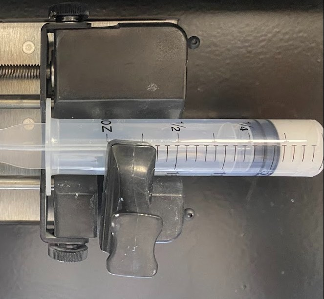
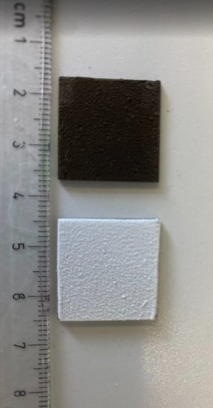
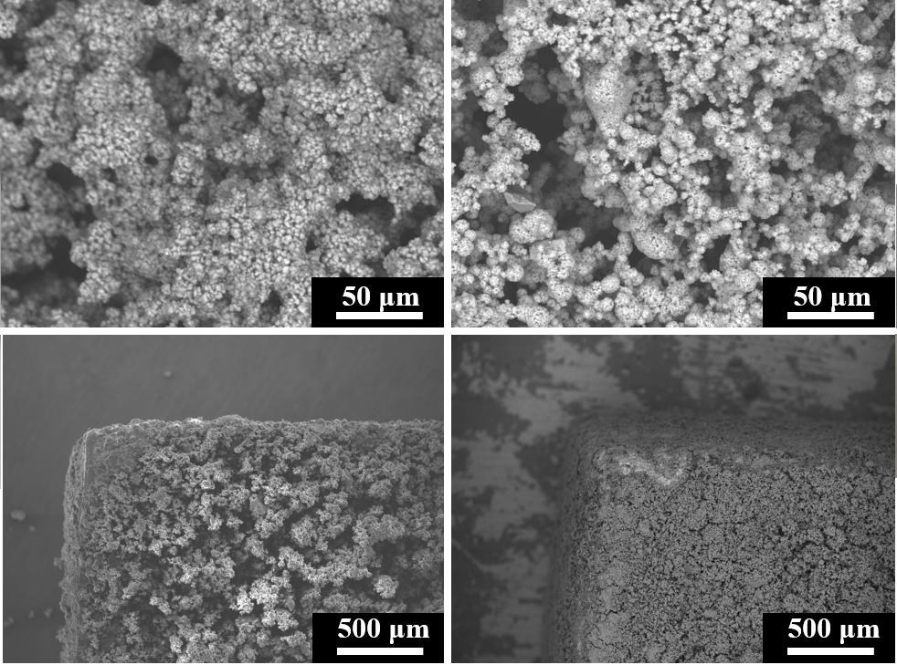
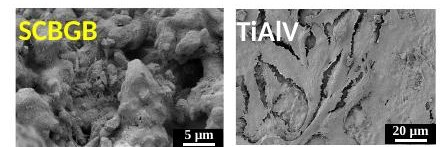

Spray coatingSpray CoatingSpray coatingSpray coatingSpray coating
A spray head atomizes a suspension of bismuth-containing glass and a preceramic polymer and lays it on titanium alloy in controlled passes.Ein Sprühkopf zerstäubt eine Suspension aus bismuthaltigem Glas und einem präkeramischen Polymer und trägt sie in kontrollierten Durchgängen auf die Titanlegierung auf.Striekacia hlava rozprašuje suspenziu skla s obsahom bizmutu a prekeramického polyméru a nanáša ju na titánovú zliatinu v kontrolovaných prechodoch.Une buse atomise une suspension de verre contenant du bismuth et d’un polymère précéramique et la dépose sur l’alliage de titane en passes contrôlées.Un cabezal atomiza una suspensión de vidrio con bismuto y un polímero precerámico y la deposita sobre la aleación de titanio en pasadas controladas.
The techniqueDas VerfahrenTechnikaLa techniqueLa técnica
Spray coating works at low temperature, so it avoids the strong heating of plasma spraying. A preceramic polymer binds the glass particles to the metal and turns into a ceramic-like layer after heat treatment.Spray Coating arbeitet bei niedriger Temperatur und vermeidet so die starke Erhitzung beim Plasmaspritzen. Ein präkeramisches Polymer bindet die Glaspartikel an das Metall und wandelt sich nach der Wärmebehandlung in eine keramikartige Schicht um.Spray coating pracuje pri nízkej teplote, a preto sa vyhýba silnému ohrevu pri plazmovom striekaní. Prekeramický polymér viaže sklenené častice ku kovu a po tepelnom spracovaní sa premení na vrstvu podobnú keramike.Le spray coating fonctionne à basse température et évite ainsi le fort échauffement de la projection plasma. Un polymère précéramique lie les particules de verre au métal et se transforme en couche de type céramique après traitement thermique.El spray coating trabaja a baja temperatura, así que evita el fuerte calentamiento de la proyección por plasma. Un polímero precerámico une las partículas de vidrio al metal y se transforma en una capa de tipo cerámico tras el tratamiento térmico.
Step-by-step tuning of the spray turned patchy deposits into uniform layers for both the silicate and the borate glasses.Die schrittweise Optimierung des Sprühens verwandelte lückenhafte Ablagerungen in gleichmäßige Schichten, sowohl beim Silikat- als auch beim Boratglas.Postupné ladenie striekania premenilo nesúvislé nánosy na rovnomerné vrstvy pri silikátovom aj borátovom skle.Un réglage pas à pas de la pulvérisation a transformé des dépôts irréguliers en couches uniformes, pour le verre silicate comme pour le verre borate.El ajuste paso a paso del spray convirtió depósitos irregulares en capas uniformes, tanto para el vidrio de silicato como para el de borato.




Impactful resultsWichtige ErgebnisseVýznamné výsledkyRésultats marquantsResultados destacados





All radiographsAlle RöntgenbilderVšetky röntgenové snímkyToutes les radiographiesTodas las radiografíasIn vitro testsIn-vitro-TestsTesty in vitroTests in vitroEnsayos in vitroOther techniquesWeitere VerfahrenĎalšie technikyAutres techniquesOtras técnicas